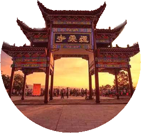
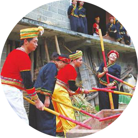
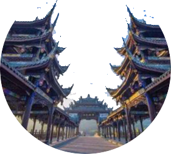
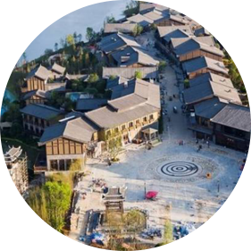

Abstract
Intangible cultural heritage, also known as oral or intangible cultural heritage, includes various types of ethnic traditions and folk knowledge, various languages, oral literature, customs and habits, handicrafts of ethnic folk, traditional medicine and other arts.
brocade
Zhuang brocade is a famous folk handicraft fabric of zhuang nationality.Zhuang brocade has a long history as early as the han dynasty, and the ancestors of the zhuang nationality have woven "cloth",...
particularsZhuang brocade art
ZHUANGZUZHIJINGONGYI
pottery
According to historical materials and public praise, jingxi pottery making began in the late Ming dynasty and the early qing dynasty, and its historical source is far older.
particularsJingxi pottery production
JINGXITAOQIZHIZUO
bronze drum
The bronze drum is a legendary historical relic that came into being and became popular in the southwest of China and the lingnan region.
particularsZhuang tonggu
ZHUANGZUTONGGUXISU
Cream-laid yarn paper
Gongchuan gauze paper has a long history, famous at home and abroad, it started in the tang dynasty, sheng produced in the qing dynasty, has a history of more than one thousand years, is a major industry of gongchuan township.Gongchuan yarn paper made by hand, paper is very thin, soft, white...
particularsGongchuan paper making process
GONGCHUANSHAZHIZHIZUOGONGYI
Flowers bamboo hats
Flower bamboo hat is the traditional folk bamboo weaving handicraft of maonan.Its maonan language is called "top card flower", which means the knitted flower at the bottom of hat. It has two or three hundred years of history up to now.
particularsBamboo hat weaving
MAONANZUHUAZHUMAOBIANZHI
travel
-

Sanjiang dong
county
Sanjiang dong autonomous county has building Bridges, singing and dancing
-
The landform is composed of red sandstone, which forms a unique topography through flowing water
Qinzhou yanxia mountain
 -
Visit the world famous cave jinlun cave, see the yao township intangible cultural heritage of guangxi to play the Chinese dance,
Masan

-
The binyang cannon dragon festival has a history of more than one thousand years. In 2008, binyang cannon dragon festival was listed as a national intangible cultural heritage.
Binyang artillery section
 -
The ancient city of tianzhou in tianyang county, guangxi, featured by zhuang culture, is gradually becoming a cultural display area for zhuang people.
ancient city
